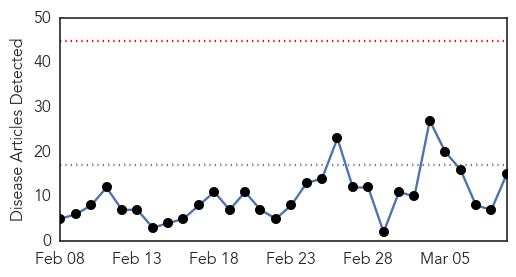
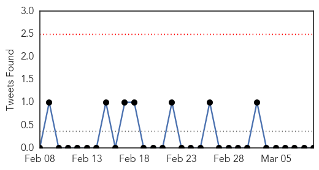
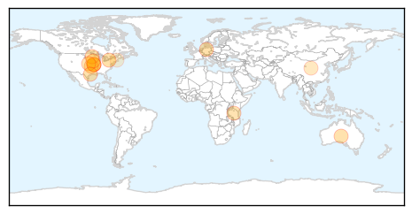
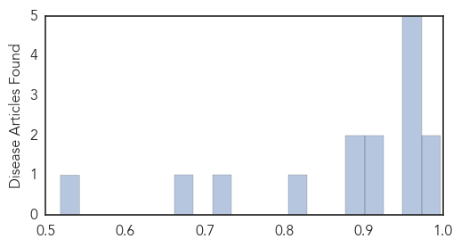

Toggle navigation
Early Warning
Daily Alerts
Influenza
Mar 09, 2015
Compare to:
-
Dengue Fever
Hemmorhagic Fever
Mold/Fungal Infection
Meningitis
Pertussis / Whooping Cough
Middle East Respiratory Syndrome
Cholera
Hepatitis
Chikungunya
Yellow Fever
Bubonic Plague
West Nile Virus
Swine Flu
Ebola
Measles
Unknown
Mumps
30 Day Trends
Web: 0
alerts
, 0
warnings
Twitter: 0
alerts
, 0
warnings
Top Articles:
0.997
Across the USA, flu season winding down
0.984
Experts predict heavy winter flu toll
0.971
Missouri reports avian influenza at Carthage-area turkey farm
0.967
Avian flu detected in Missouri turkey flock
0.963
2005 Central Florida State Fair E. coli Outbreak
0.951
Officials hopeful that avian flu virus will be contained
0.951
Flu Scan for Mar 09, 2015
0.922
MDA confirms avian influenza in second Missouri facility
0.908
Researchers assess causes of febrile illnesses in Tanzanian children
0.900
Flu pandemic begins
0.894
Avian flu confirmed at turkey farm near Asbury
0.819
Avian influenza confirmed in Missouri turkey flock
0.734
H5N2 strikes Missouri turkey farm
0.668
Government to look into claims that stricter rules on school absenteeism led to illnesses spreading
0.518
American Dryer's eXtremeAir Cold Plasma Clean(R) Technology Kills Influenza A Virus
Top Tweets:
No tweets found for Mar 09, 2015
Web/News Articles

Tweets

Article Locations

Article Confidences
